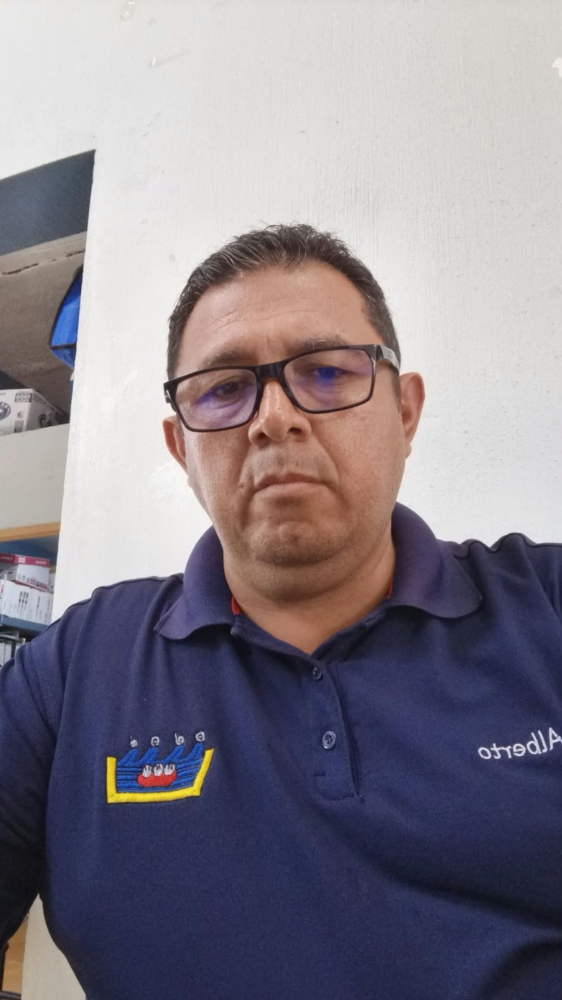

Mesa Directiva
Eduardo Alaníz Mejía
Presidente de la Liga
3173880757

Alberto Amézquita Ayón
Vicepresidente de la Liga
3171078158

Presidente de la Liga
3173880757

Vicepresidente de la Liga
3171078158